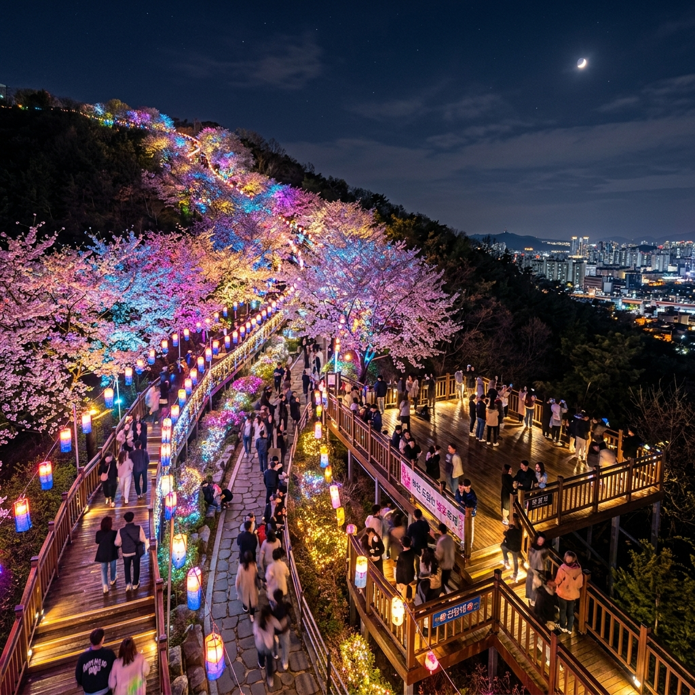
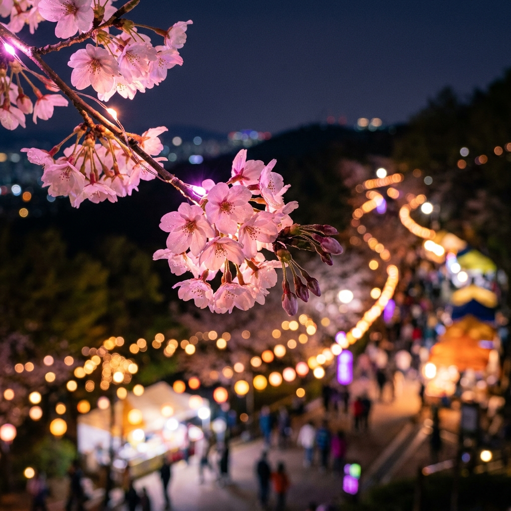
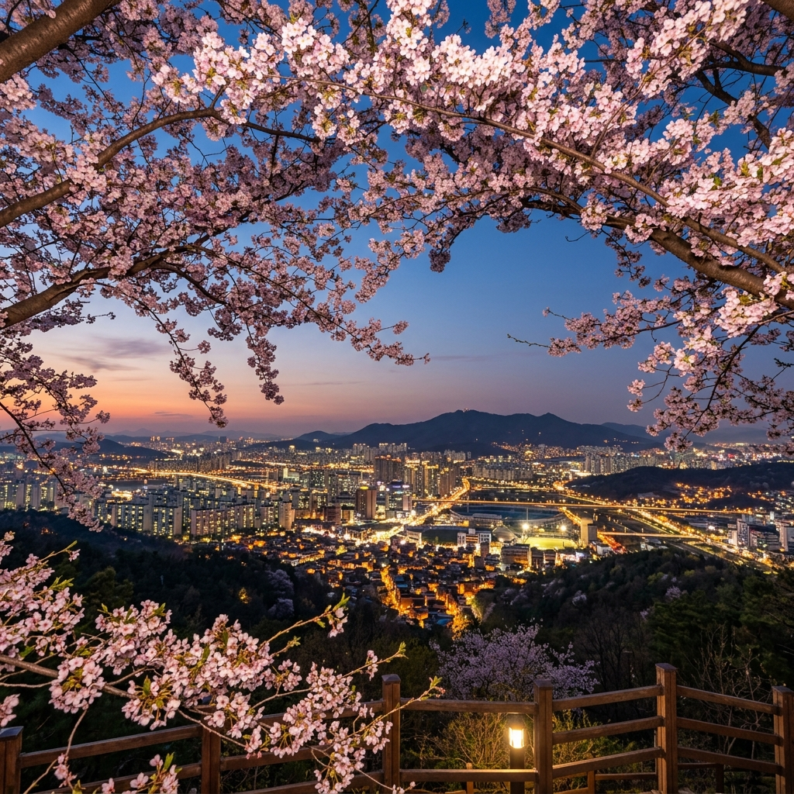

?�녕?�세?? 봄의 ?�령?��? ?�리 곁을 찾아??지�? 경기??부천의 명물 �??�나??부�??�당??벚꽃축제 ?�장???��??�습?�다. ?�많?� 벚꽃 명소?�이 ?��?�? ?�당?�이 ?�독 ?�별???�유??바로 ??��???�름?�운 '밤벚�????�습?�다. ??1.8km???�하??벚꽃 ?�책로�? ?�라 ?�치???�천 개의 조명?�이 꽃잎??비출 ?? ?�리???�실???�고 ?�화 ?�으�??�어????�� 착각??빠�?�??�니??
?�당??벚꽃축제??부�??��??�에게는 ?��? ?�무??친숙??봄의 ?��??�사?��?�? 2026???�해???�욱 ?�교?�진 미디???�트?� ?�마??조명 ?�어 ?�스?�이 ?�입?�어 �??�성?��? 최고?�에 ?�르?�?�니?? ?�늘 ???�스?�에?�는 밤벚꽃을 ?��?�?즐기�??�한 ?�간 조명 ?�간?��??? ?�파�??�해 ?�젓?�게 ?�책?????�는 ?��? 코스까�? ?�문가???�선?�로 꼼꼼?�게 짚어?�리겠습?�다.
기상�?�� 부천시�?�� 공식 기상 ?�이?��? ?��??�게 분석?�고 ?��? 개화 ?�황???�조해 �?결과, ?�번 �??�요?�인 ?�늘부??금요?�까지가 벚꽃???�감??가??진하�??�름?�운 ?�기?�니?? 주말?�는 미세??봄비 ?�보가 ?�어 꽃잎???�어�?가?�성???�으므�? 가?�하�??�번 �?�??�???�간???�용??방문?�시??것이 '벚꽃???�수'�?만끽?????�는 방법?�니??

많�? 분이 ?�당??벚꽃축제??바로 ?�까지 차�? ?�고 가?�다 진�???빼곤 ?�니?? ?��?�?축제 기간 중에???�당?�터부???�상까�? 차량 ?�제가 ?�격???�루?��?�??�문?? 가급적 ?�중교?�을 ?�용?�시??것이 진정??고수???�택?�니?? ?�히 춘의??��??걸어 ?�라가??�?주�??�는 ?�기?�기???�네 카페?� 맛집?�이 ?�진???�어 ?�책??즐거?�???�해줍니??
| ?�토�?명당 | ?�징 �?매력 | 촬영 ??/th> |
|---|---|---|
| 벚꽃 ?�산 진입�??�널 | 가???�창??벚꽃 ?�널???�성?�는 �?/td> | 광각 ?�즈�??�늘??채운 꽃을 ?�기 |
| 천문과학관 ???�망?� | 부�??�내 ?�경�?벚꽃???�시??촬영 가??/td> | ?�간 모드�??�티?�이?��? 조화?�키�?/td> |
| ?�린???�?�터 ?�근 벤치 | ??? 조명???�어 ?�물 ?�진??가???�쁘�??�옴 | 조명??마주 보고 촬영?�여 ?�굴 밝히�?/td> |
밤벚�??�진???�심?� 조명과의 거리 조절?�니?? 조명???�무 가까우�??�굴???�얗�??�아가 버리�? ?�무 멀�??�이즈�? ?�해지�? 갤럭??S26 ?�트?�의 ?�간 ?�물 모드�??�용?�다�?조명???�사�??�편???�어 '?�광 ?�과(Rim Light)'�??�출??보세?? 꽃잎??빛을 머금???�명?�게 빛나??마법 같�? ?�진??건질 ???�습?�다.

?�당???�책?� ?�만??경사?��?�??�복 1?�간 ?�상 ?�요?��?�??�려???��??�면 기분 좋�? ?�기가 찾아?�니?? 축제???�의 ?�시 ?�드 ?�럭??좋�?�? ?��?�??????��? ?�하?�다�?춘의??방향?�로 조금�??�려?�세?? ?�래???�포 ?�당?��????�렌?�한 카페?�까지 부�??�유???�박?�면?�도 깊�? 맛을 ?�낄 ???�는 곳들???�러분을 기다리고 ?�습?�다.
?�당???�상?�는 부�?천문과학관???�치???�습?�다. 벚꽃 축제 기간?�는 ?�간 관�??�로그램???�장 ?�영?�기???�는?�요. ?�드?�진 벚꽃 ?�로 ?�아지??별빛??관�??�비�?바라보는 경험?� ?�른 곳에?�는 ?�낄 ???�는 ?�당?�만???�그?�처 ?�동?�니?? ?�이?�이 ?�는 가족이?�면 미리 ?�페?��??�서 ?�약?�여 벚꽃 ?�행�?�?관측을 ?�시??즐기???�석?�조???�과�??�려보세??
?�름?�운 ?�경??취해 ?�전???��????�서?????�니?? ?�당?��? ?�연???��? 지?�이므�??�책로�? 벗어??경사면�? 매우 ?�험?�니?? ?�히 ?�카봉??무리?�게 ?�용?�다 중심???��? ?�도�?주의?�야 ?�니?? ?�한, ?�간?�는 ?�리가 멀�??��?므�??�근 주택가 주�??�을 배려?�여 지?�친 고성방�????��????�며, ?�레기는 반드??지?�된 ?�소??버리???�숙???��? ?�식??보여주세??

봄철 불청객인 미세먼�???4??�??�외 ?�들?�의 ??방해 ?�소?�니?? 방문 ??반드???�어코리?�나 ?�씨 ?�을 ?�해 ?�시�??��?질을 ?�인?�세?? 만약 ?�쁨 ?�계?�면 KF94 마스??착용?� ?�수?�며, ?�책 중간중간 ?�분 ??���?충분???�주?�야 ?�니?? ?�당?��? ?�무가 많아 ?�심 ?��?보다??공기가 맑�? ?�이지�? ?�흡기�? ?��??�신 분들?�라�?가급적 ?��?질이 좋�? ?�을 골라 방문?�시??것을 추천?�니??
부�??�당??벚꽃축제???�려???�??축제??매력보다???�겹�??�근???�네 ?�산???�뜻?�이 묻어?�는 곳입?�다. ?�둠???�려?��? ?�책로�? ?�인???�을 ?�고 걷다 보면, 머리 ?�로 ?�쳐�?벚꽃 ?�널???�상??모든 근심????��주는 ??�� ?�온?�을 줍니?? ?�봄, ?�직 밤벚꽃의 ??��??즐기지 못하?�다�?주�? 말고 ?�당?�으�?발걸?�을 ??��보세?? 별이 꽃이 ?�고, 꽃이 별이 ?�는 ?��? 못할 밤이 ?�러분을 기다리고 ?�습?�다.